Voom on null data - and effects of confounding/correlation
M Stephens
2016-02-03
Last updated: 2016-02-04
Code version: cc743de0ed77120abe5ff470019987f7f7ba20fe
Load in the gtex liver data
library(limma)
library(edgeR)
library(qvalue)Warning: replacing previous import by 'grid::arrow' when loading 'qvalue'Warning: replacing previous import by 'grid::unit' when loading 'qvalue'library(ashr)
r = read.table("../data/Liver.txt")
r = r[,-(1:2)] # remove outliers
#extract top g genes from G by n matrix X of expression
top_genes_index=function(g,X){return(order(rowSums(X),decreasing =TRUE)[1:g])}
lcpm = function(r){R = colSums(r); t(log2(((t(r)+0.5)/(R+1))* 10^6))}
Y=lcpm(r)
subset = top_genes_index(10000,Y)
Y = Y[subset,]
r = r[subset,]Define voom transform (using code from Mengyin Lu)
voom_transform = function(counts, condition, W=NULL){
dgecounts = calcNormFactors(DGEList(counts=counts,group=condition))
#dgecounts = DGEList(counts=counts,group=condition)
if (is.null(W)){
design = model.matrix(~condition)
}else{
design = model.matrix(~condition+W)
}
v = voom(dgecounts,design,plot=FALSE)
lim = lmFit(v)
betahat.voom = lim$coefficients[,2]
sebetahat.voom = lim$stdev.unscaled[,2]*lim$sigma
df.voom = length(condition)-2-!is.null(W)
return(list(v=v,lim=lim,betahat=betahat.voom, sebetahat=sebetahat.voom, df=df.voom, v=v))
}Make 2 groups of size n, by random sampling.
set.seed(101)
n = 5 # number in each group
counts = r[,sample(1:ncol(r),2*n)]
condition = c(rep(0,n),rep(1,n))
r.voom = voom_transform(counts,condition)
r.ebayes = eBayes(r.voom$lim)
hist(r.ebayes$p.value[,2],main="histogram of effect tests")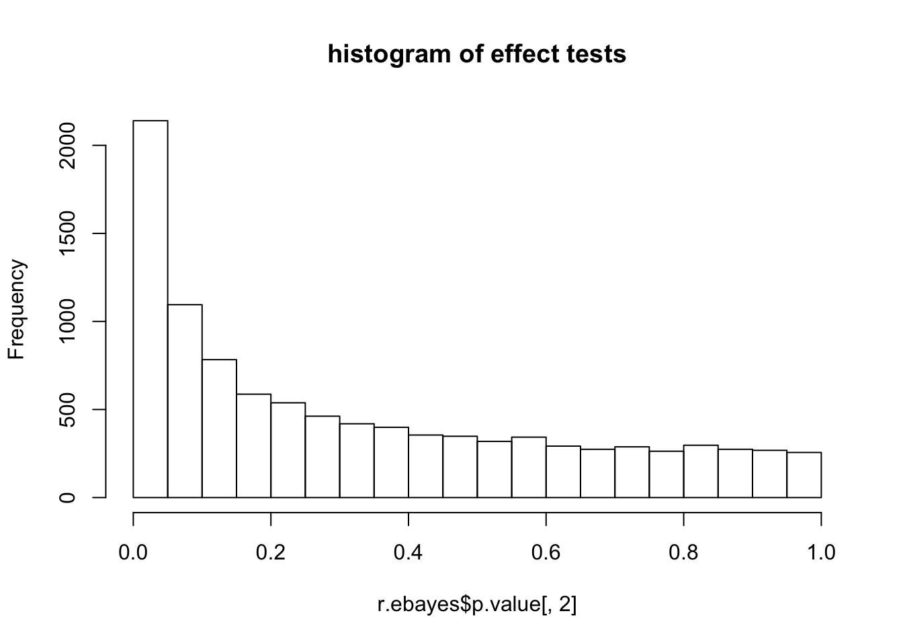
?eBayes says: “the estimates s2.prior and df.prior are computed by fitFDist. s2.post is the weighted average of s2.prior and sigma^2 with weights proportional to df.prior and df.residual respectively.”"
Let us look at these:
r.ebayes$df.prior[1] 3.596342r.ebayes$s2.prior[1] 0.8582596head(r.ebayes$df.residual)[1] 8 8 8 8 8 8plot(r.ebayes$sigma,r.voom$lim$sigma)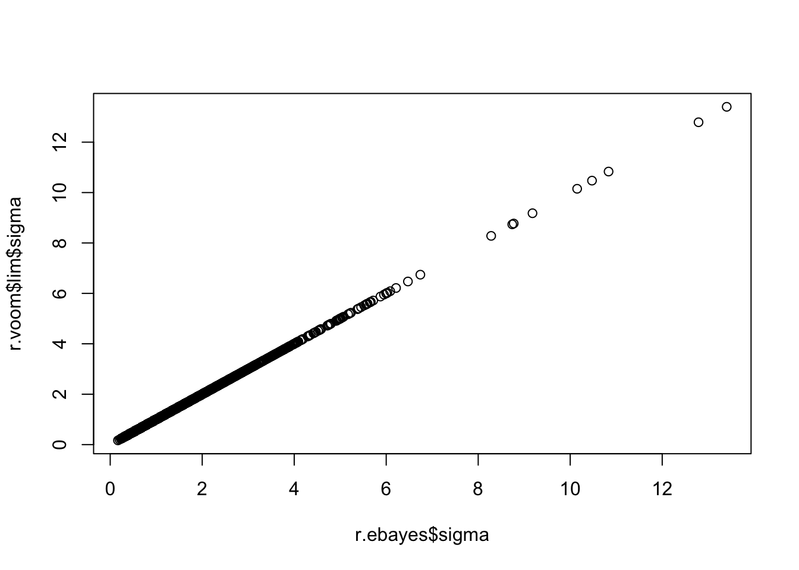
plot(log(r.ebayes$sigma), log(sqrt(r.ebayes$s2.post)),col=(1+(r.ebayes$p.value[,2]<0.01)))
abline(a=0,b=1,col=2)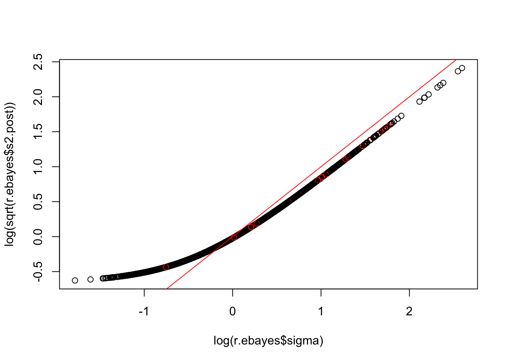
p value seems particularly to be problematic for high expressed genes?
mean(r.ebayes$p.value[1:100,2]<0.1)[1] 0.46mean(r.ebayes$p.value[1:50,2]<0.1)[1] 0.56mean(r.ebayes$p.value[1:10,2]<0.1)[1] 0.8head(r.ebayes$p.value[,2]) 13290 56303 43134 56317 56306
0.6892441407 0.1493676934 0.0038057334 0.0406911853 0.0746572002
38672
0.0005252427 Note that the third and 6th gene both have small p values. These measurements turn out to be correlated… indeed many genes are very correlated
Ysub=lcpm(counts)
plot(Y[3,],Y[6,],col="gray", main="selected observations (black and red) \n in context of all (grey)")
points(Ysub[3,],Ysub[6,],col=condition+1)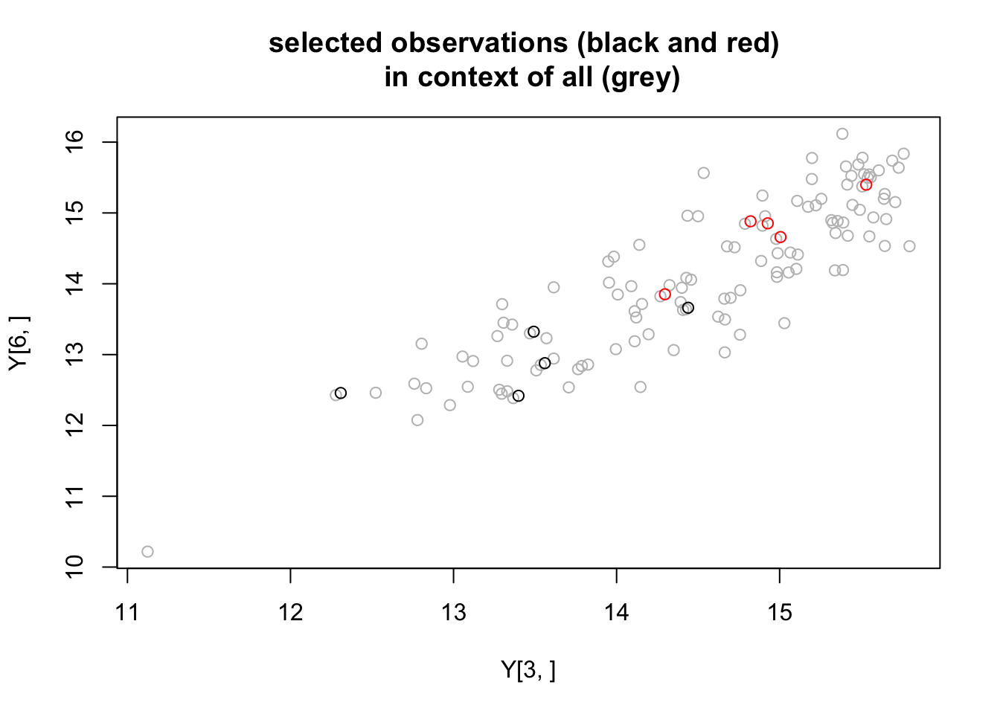
hist(cor(t(Ysub[1:100,])),main="correlation of top 100 expressed genes")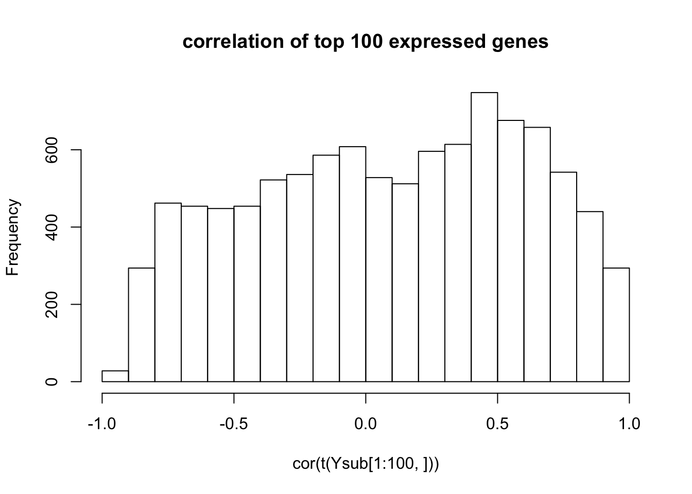
hist(cor(t(Ysub[8000:8100,])),main="correlation of 100 lower expressed genes")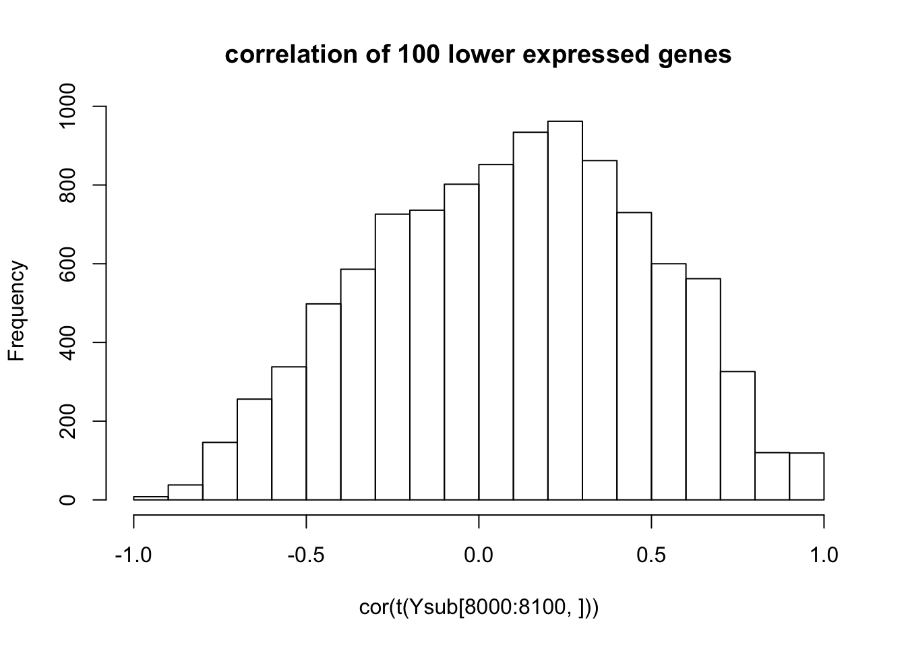
#plot an estimate of correlation of Ysub[6,] with other genes
#plot(((1/10)*t(scale(Ysub)) %*% scale(Ysub)[6,,drop=FALSE])[1:10000],main="correlation of Y[6,] with other genes",pch=".")
Ynorm = (Ysub-apply(Ysub,1,mean))
Ynorm = Ynorm/apply(Ynorm,1,sd)
hist(((1/10)* Ynorm[6,,drop=FALSE] %*% t(Ynorm)),main="correlation of Y[6,] with other genes",xlab="correlation")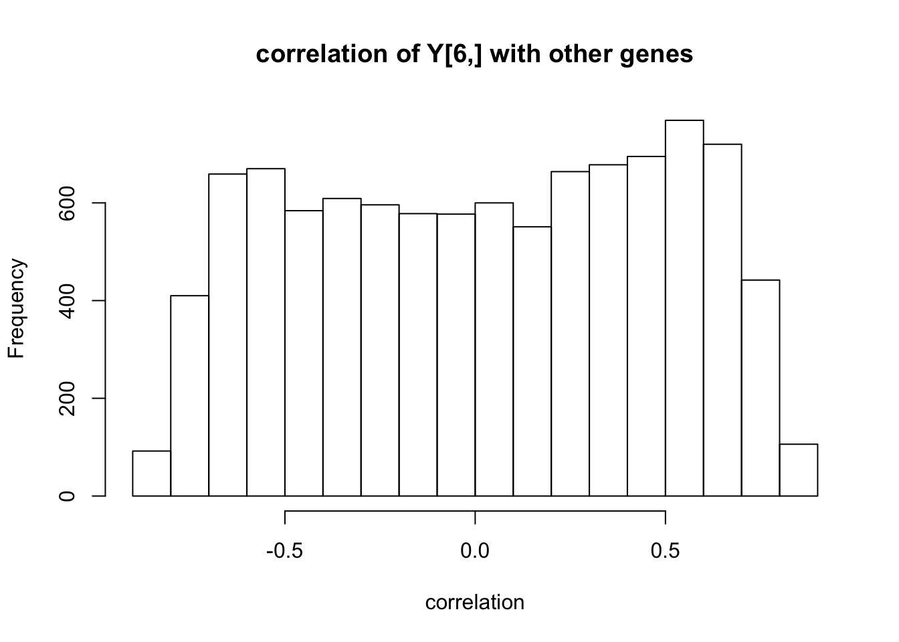
plot(Ysub[3,],r.voom$v$E[3,],main="check my lcpm matches voom")
abline(a=0,b=1)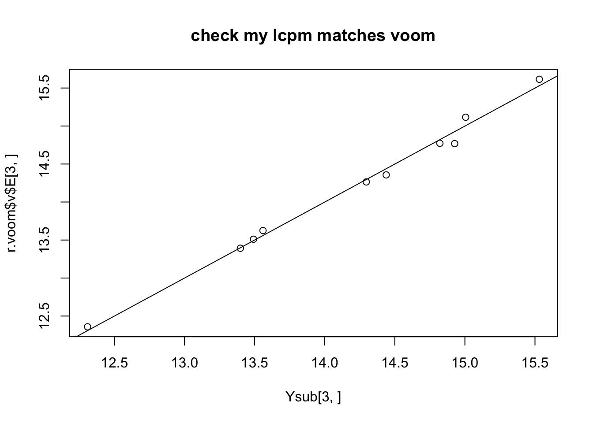
So these aren’t independent events. And there could be an element of confounding factors going on here. But still it seems rather coincidental that such small p values occur immediately in the strongest expressed genes… suggests maybe there is something we could do better at the individual test level.
Note that at the 6th gene the top 5 values are in one group. This has non-parametric p value .5^9 = .002 which is small, but much bigger than the parametric p value 5.2524272\times 10^{-4}. Still, worth bearing in mind that we may have gotten “unlucky” with this second seed.
One thought is that maybe the standard deviation is being underestimated in this case. In fact, it is of course - because we know the truth is “null” so the within group variation here is much smaller than the truth. Are we doing enough to remediate this?
hist(apply(Y,1,sd),nclass=100)
abline(v=sd(Y[6,]),col=2)
abline(v=sd(Ysub[6,]),col=3)
plot(apply(Y,1,sd)[1:100])
points(apply(Ysub,1,sd)[1:100],col=2)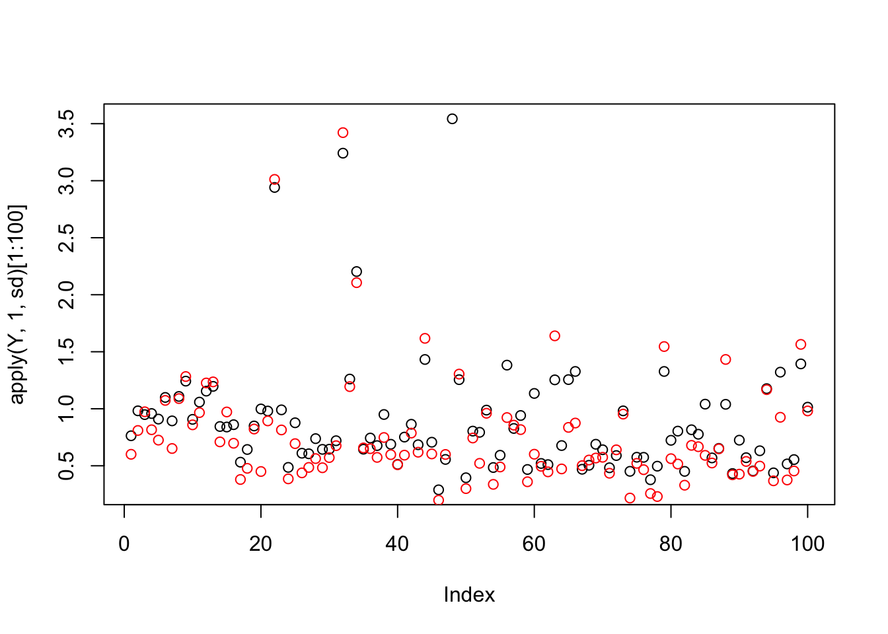
plot(apply(Y,1,sd)[1:100],apply(Ysub,1,sd)[1:100],main="sd of Y, all data vs selected subset of 10")
abline(a=0,b=1)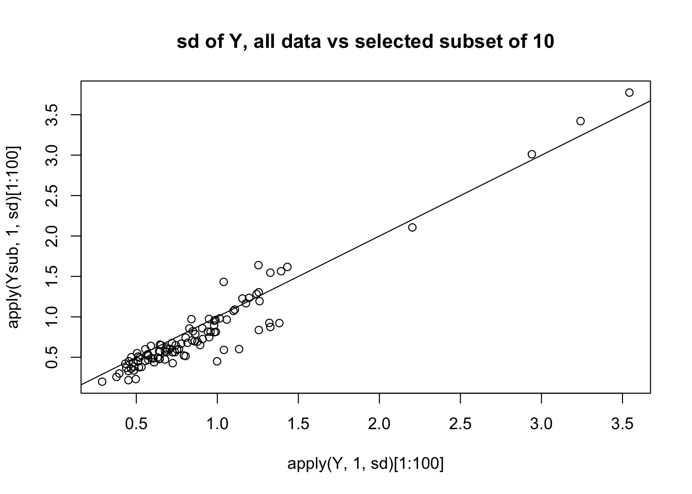
plot(apply(Y,1,sd)[1:100],0.5*(apply(Ysub[,1:5],1,sd)[1:100]+apply(Ysub[,6:10],1,sd)[1:100]),
main="sd of Y, all data, vs selected subset \n estimated under alternative",ylab="average sd from two groups")
abline(a=0,b=1,col=2)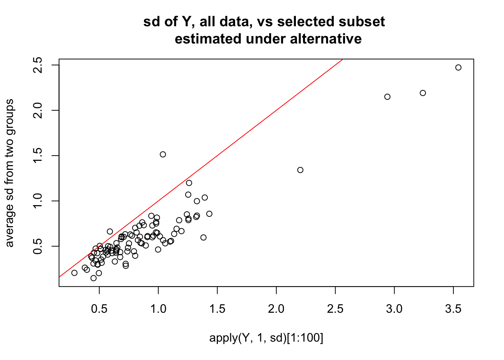
plot(apply(Y,1,sd),0.5*(apply(Ysub[,1:5],1,sd)+apply(Ysub[,6:10],1,sd)),
main="sd of Y, all data, vs selected subset \n estimated under alternative",ylab="average sd from two groups",pch=".")
abline(a=0,b=1,col=2)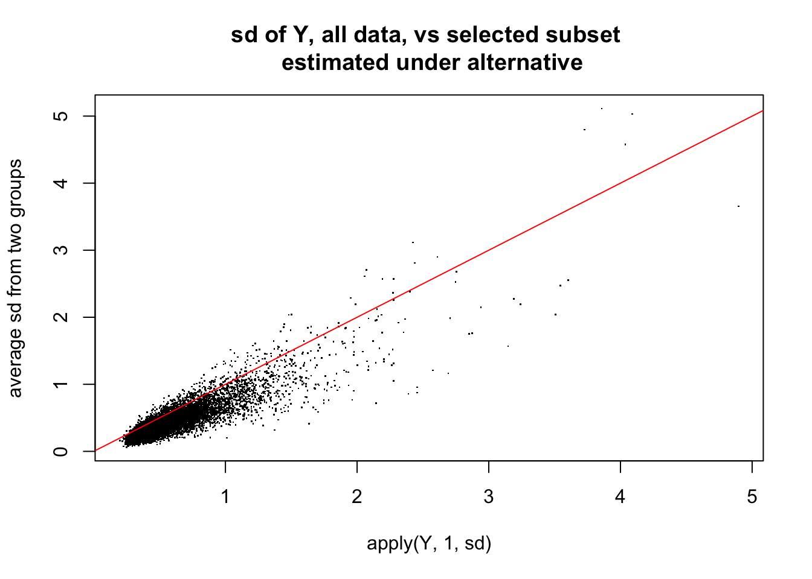
So here is what i think is happening: the randomization in this case happened to correlate highly with first PC. Consequence is that not only are there lots of “signals” in mean between two groups, but also the variance estimates are consistently too small - so the Empirical Bayes method which combines info across all the genes fails to save us.
temp=svd(t(Ynorm))
plot(temp$d)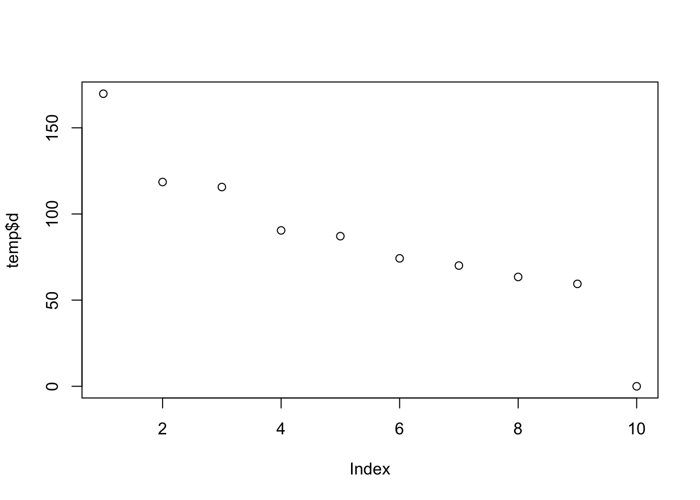
plot(temp$u[,1],main="first PC is correlated with group \n (1-5 vs 6-10)")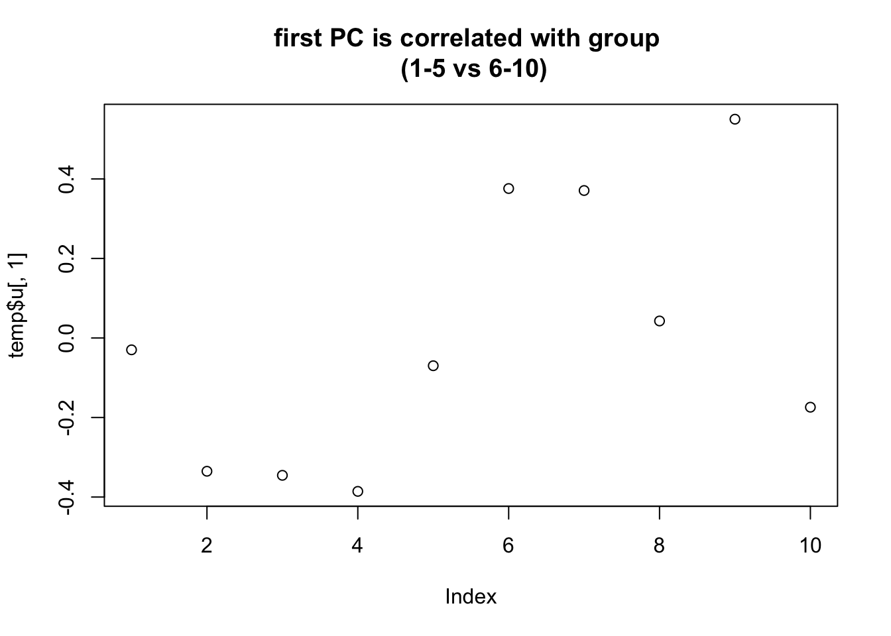
Session information
sessionInfo()R version 3.2.3 (2015-12-10)
Platform: x86_64-apple-darwin13.4.0 (64-bit)
Running under: OS X 10.11.2 (El Capitan)
locale:
[1] en_US.UTF-8/en_US.UTF-8/en_US.UTF-8/C/en_US.UTF-8/en_US.UTF-8
attached base packages:
[1] stats graphics grDevices utils datasets methods base
other attached packages:
[1] ashr_1.0.8 qvalue_2.0.0 edgeR_3.10.5 limma_3.24.15 knitr_1.12.3
loaded via a namespace (and not attached):
[1] Rcpp_0.12.3 magrittr_1.5 MASS_7.3-45
[4] splines_3.2.3 pscl_1.4.9 munsell_0.4.2
[7] doParallel_1.0.10 lattice_0.20-33 SQUAREM_2014.8-1
[10] colorspace_1.2-6 foreach_1.4.3 stringr_1.0.0
[13] plyr_1.8.3 tools_3.2.3 parallel_3.2.3
[16] grid_3.2.3 gtable_0.1.2 iterators_1.0.8
[19] htmltools_0.3 yaml_2.1.13 digest_0.6.9
[22] reshape2_1.4.1 ggplot2_2.0.0 formatR_1.2.1
[25] codetools_0.2-14 evaluate_0.8 rmarkdown_0.9.2
[28] stringi_1.0-1 scales_0.3.0 truncnorm_1.0-7